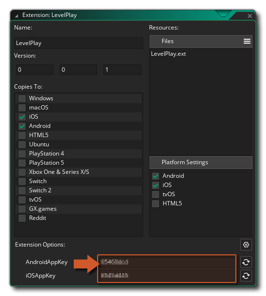

You can access the Extension Options by navigating to the GMLevelPlay extension asset in the Asset Browser and double-clicking it.

Options
AndroidAppKey
| Type | String |
| Required | Yes, if targeting Android |
| Platform | Android only |
The App Key for your app, used to initialise the LevelPlay SDK on Android. Found on the Unity LevelPlay (ironSource) dashboard under your app's Android platform settings.
Without a valid
AndroidAppKey, levelplay_init will fail to initialise the SDK on Android.
iOSAppKey
| Type | String |
| Required | Yes, if targeting iOS |
| Platform | iOS only |
The App Key for your app, used to initialise the LevelPlay SDK on iOS. Found on the Unity LevelPlay (ironSource) dashboard under your app's iOS platform settings.
Without a valid
iOSAppKey, levelplay_init will fail to initialise the SDK on iOS.